1.1: Visualizing datasets using the embedding projector
Do the different digits separate into distinct clouds? Are there images that are in the wrong cloud,
and can you make sense of why they are wrong? Are there images that are outliers from the rest of the
data? Are there digits that seem more separate from the others, and are there pairs of digits that are
more easily confused?
For normal PCA it seems like the digits don't quite separate into distinct clouds but instead make
up different regions of a cloud of sort, where the closer you get to the center, the more variability
you get in the attempts to distinguish different types of numbers from MNIST. For the most part, however,
PCA seems to do a pretty decent job. If we leave t-SNE running for a good amount of time, we do see
the images start to clump into more distinct clouds. And although there is some error due to certain numbers
looking a lot like a different number, it's very accurate. It's interesting to also note the patterns
in the data where some clouds are closer because those two numbers look very similar (i.e. 1 and 7).
1.3: Word geometry
Write up some notes on your observations, perhaps supplemented with a few pictures.
Do you get different or better results if you use Word2Vec All instead of 10K? Did you find any
interesting examples that speak to how words are used news articles? Write up what you experimented
with and what conclusions you drew.
I was curious to see what people thought about children. So I set the scale to the left being "bad" and
the right being "good". I ended up using Word2Vec All because it gave me a much nicer variety of results
to compare the datapoint with. Interestingly children leaned slightly more towards the "good" side, but only
slightly. Other things that were "good" include "friends," "love," "wife." While things that were "bad" were
a little surprising. Some notable mentions include "jewish," "outside," "marriage." That being said there were
also some odd points here and there, so I can't conclude the correlation is exactly perfect.
1.4: Finding word analogies with vector algebra
Spend a few minutes experimenting with the demo on https://rare-technologies.com/word2vec-tutorial/
(under “Bonus App”) which uses Word2Vec vector algebra to solve analogies.
Make a note of any interesting examples you find.
The most interesting and accurate correlation my partner and I stumbled across was:
MIT is to Caltech as Harvard is to Yale.
1.5: Exploring fonts with the Embedding Projector (All homework due before class next Wednesday)
1. View the fonts with PCA embedding. Do you see any clumps/areas with obvious characteristics?
Record a few Font IDs for distinct characteristics/groupings that you find interesting (hover over a
character to get its font ID), such as bold, italics, cursive...etc.
There's one super large and obvious clump that seems to contain all the weird looking fonts (i.e. 106, 8097,
328 to name a few). And there one more grouping of very long, narrowish As (i.e. 6005, 6042, 6355).
2. Change to the embedding to T-SNE. Record how many iterations you let T-SNE run for for and
whether or not you were able to get interesting groupings. Again, record Font IDs for interesting
fonts/groupings.
I got much more diversity than PCA, but again nothing too significant even after 1060 iterations.
That being said I got a less clumpy clump with one notable spike protruding from the data, some points include:
301,302,1236 which seem to be fonts that are squished more along the vertical direction.
3. Find a font you like, get its ID, and type that into the search bar at the right-hand side of
the screen. Use the "neighbors" slider to isolate a few dozen points and record the Font IDs of the
10 nearest neighbors that make sense. Repeat this for 3 or 4 fonts. If you find a font that doesn't
have nearest neighbors that look similar, note that down as well.
6052: 6051, 2864, 453, 5523, 5038, 202, 2689, 6226, 6042, 5485
3659: 7440, 2154, 7134, 96, 7439, 72, 4065, 2609, 6058, 7243
6835: 4720, 4749, 3438, 65, 2477, 5309, 6223, 3441, 2871, 4919
2.3: Creating new fonts
0. Edit FontModel.js so another character besides "r" is being displayed as the sample character
for the 40 attributes. Edit Alphabet.vue so that all of the uppercase, lowercase, and numerical
sample font characters are displayed in the right side of the screen instead of just the lowercase
characters. Take a screenshot for your writeup.
The character I chose to represent is "Z", below is the screenshot:
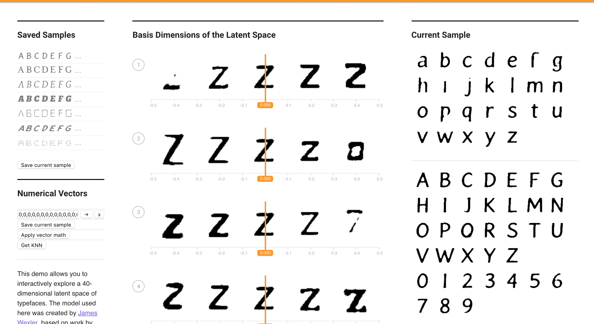
1. Edit VectorChooser.vue to add a new button under the "Apply vector math" button.
The new button should show the font Id of the "nearest neighbor" font that is "most similar to"
the current font, out of all the fonts in the 50K training set. Can you find examples of nearest neighbor fonts that don't make sense?
The button can be seen on the website, and I was able to stumble into some neighbors that aren't quite convincing, at least to me.
The similarity in action can be seen here:
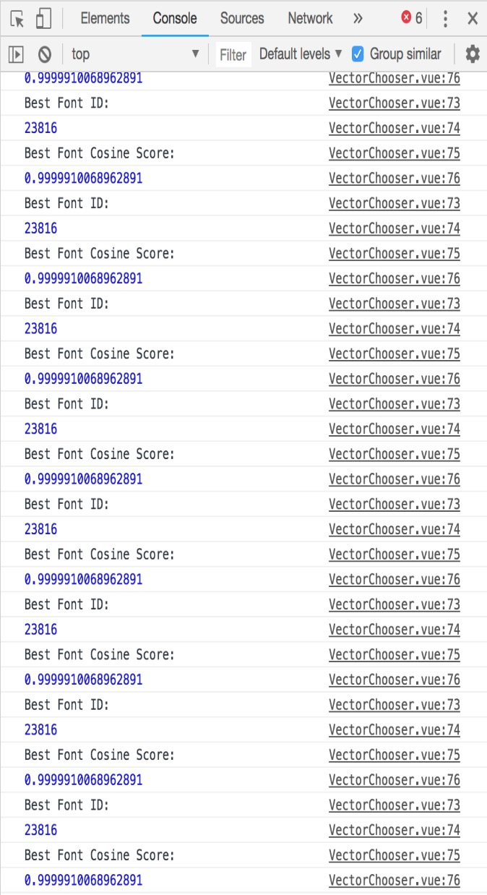
Meanwhile the odd case occured with one of the sample fonts:
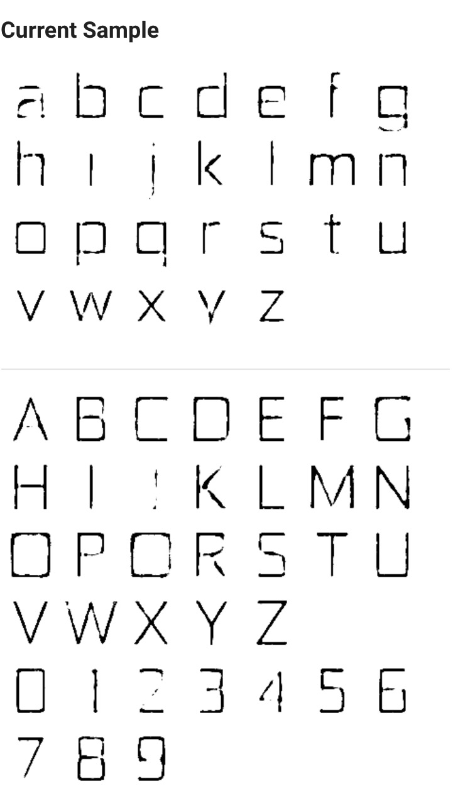
Which was most "similar" to this font:
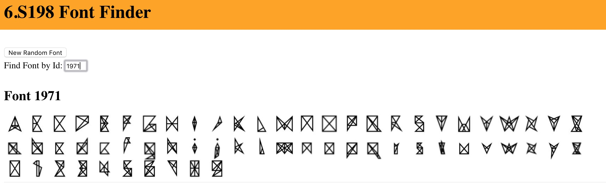
2. What is the “average” of a set of fonts? (Hint: What does that mean in terms of the
40 dimensions)? Write some code to Find the nearest font neighbor to the average font.
The average of a set of fonts would be the vector sum of their 40-D vectors, divided by the total number of vectors, to yield a new 40-D vector. I wrote the code and did this for the given fonts, found the nearest neighbor of that array, and then plugged it into fontfinder to find that the average font of all the vectors looks like this:
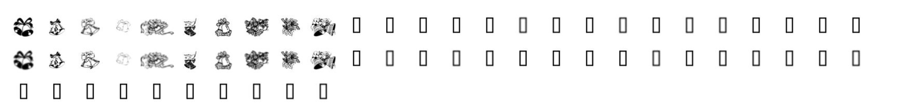
3. Similar to Monday's word analogy exercise, we will now be working with font analogies.
Feel free to use the Font Finder website to explore different fonts and obtain their attribute vectors.
a. Here is a basic "bolding vector" that Natalie obtained by getting the vector of thickest font in the “Saved Sample” space:
Try to add this vector to any font. You may do the basic vector math by modifying the “Apply Vector Math” button in VectorChooser.vue or adding a new button/functionality.
What does adding this vector to a font do? Does it perform bolding well at thickening the original font? Are there other characteristics that seem to also carry over? Try this with another characteristic. It may be helpful to use the characteristics you gathered previously.
I took one of the standard sample fonts, added the bolding vector, and the result was a more bold version of that vector:
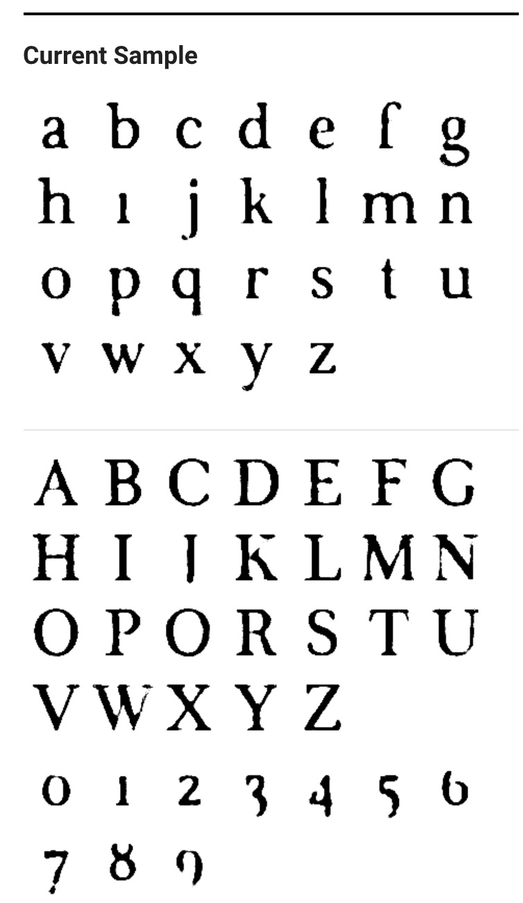
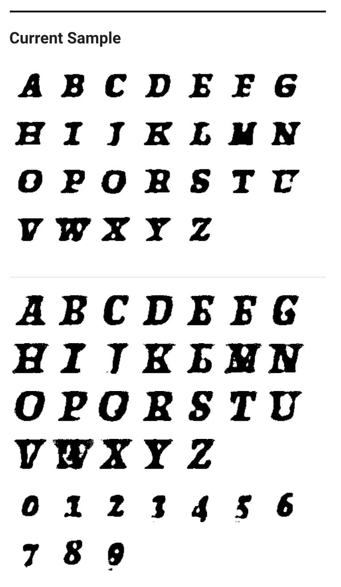
b. Find 10 fonts for a specific quality (i.e. bolding, dotting, fancy, serif...etc) and average
them out to find a characteristic vector (for example, “bolding vector”). Try applying that vector to
another font. Again, you can do this by manual computation and then modifying the added vector in the
"Apply Vector Math" button, or you can make new buttons. Does it work better or worse than the previous
one-sample method? Try this with at least 2 characteristics.
I chose to implement a thicc (I literally wrote it this way unintentionally, wow, how far I've fallen) characteristic for this first case. I applied it to thin vectors and this was the result (it wasn't great):
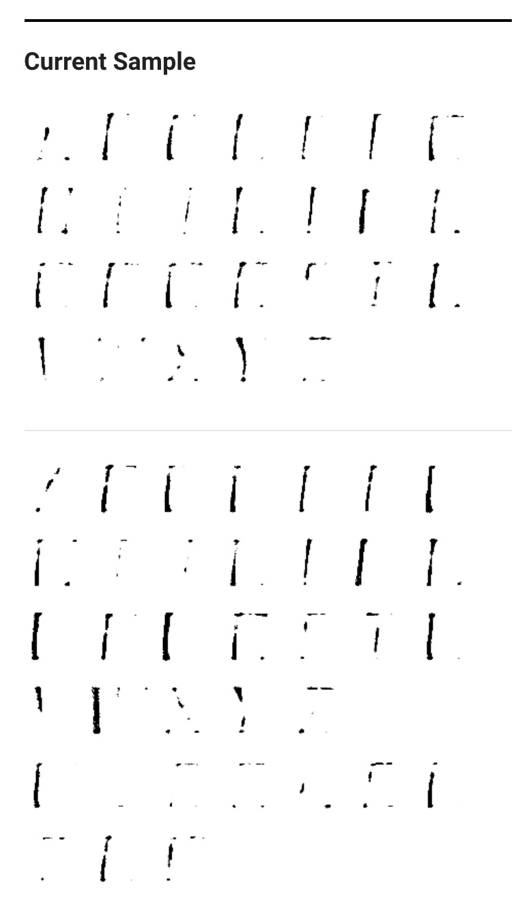
c. Find 10 fonts the exhibit for a specific characteristic and 10 fonts for the opposite of that
characteristic (i.e. bold vs. corresponding non-bold). Subtract the vectors for each pair and take
the average difference. How does this work as a vector for the characteristic (e.g., as a "bolding
vector")? Does this work better or worse than the method above to obtain your desired
characteristic? Try this with at least 2 characteristics.
Using the average difference between the 10 thick fonts from above, and 10 thin fonts. Again, using one of the standard fonts, it seemed to yield a thicker version of that. I'm not quite sure what the result was supposed to be
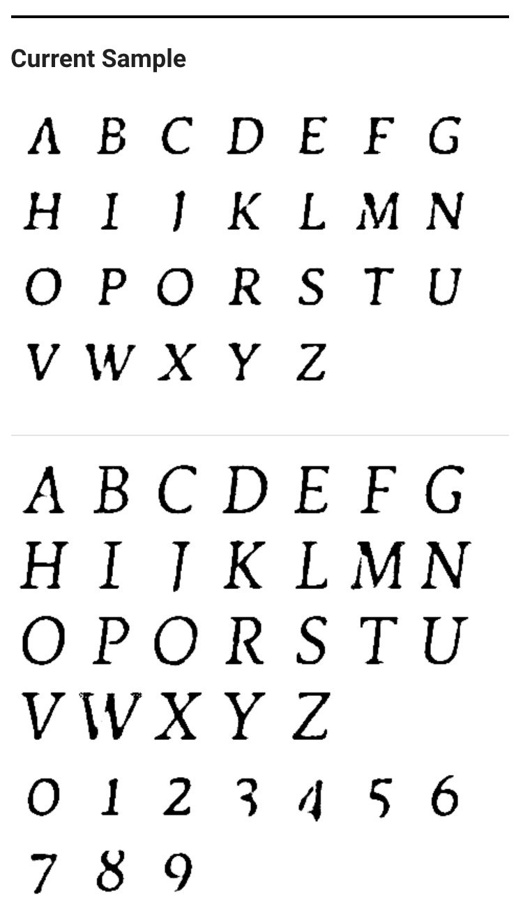
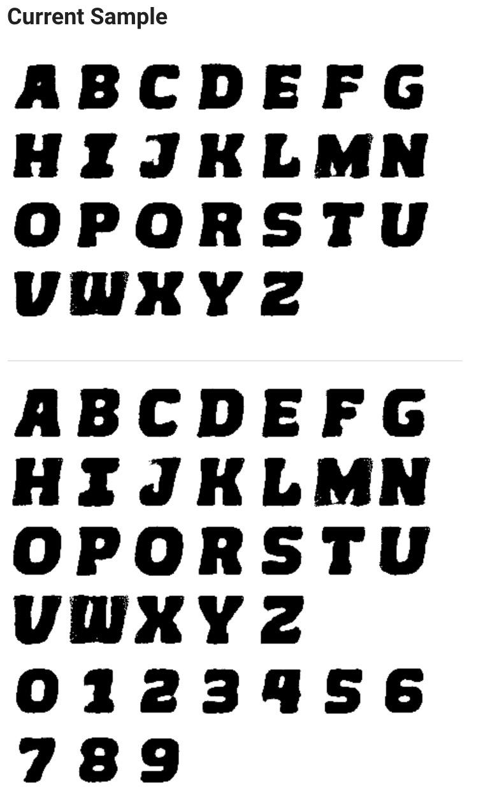
4. Can you figure out how to create a vector that makes uppercase fonts lowercase?
(Hint: You can try finding fonts that only have uppercase/lowercase characters and finding
analogous vectors, or you can try playing with the 40 attribute sliders directly.)
I tried applying a simple lowercase font to an uppercase font to see the immediate results, which were not so good.
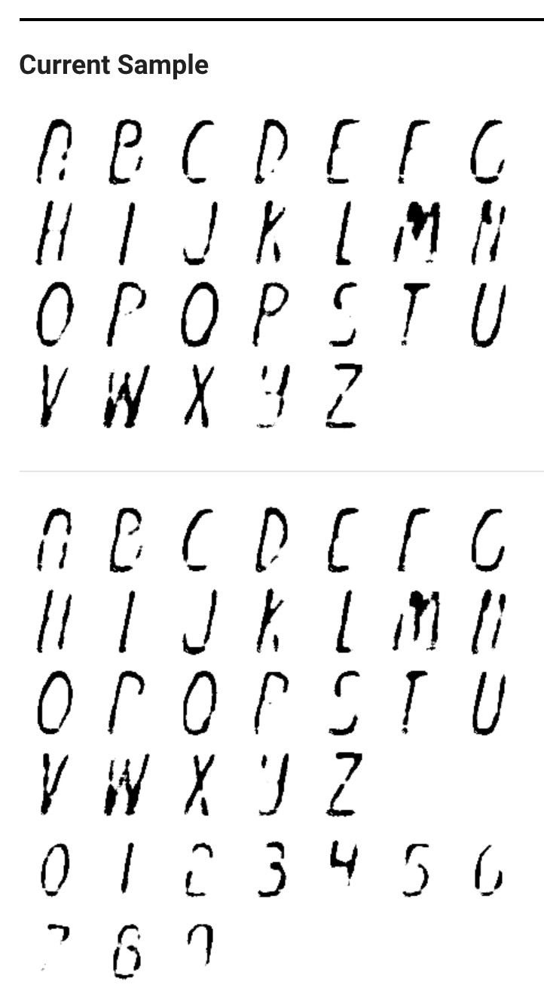
5. Can you create a vector based on your personal font tastes (i.e. a personal-likeable vector)?
Please also make note of any interesting vector directions you find.
I call this one: Brash & Bold
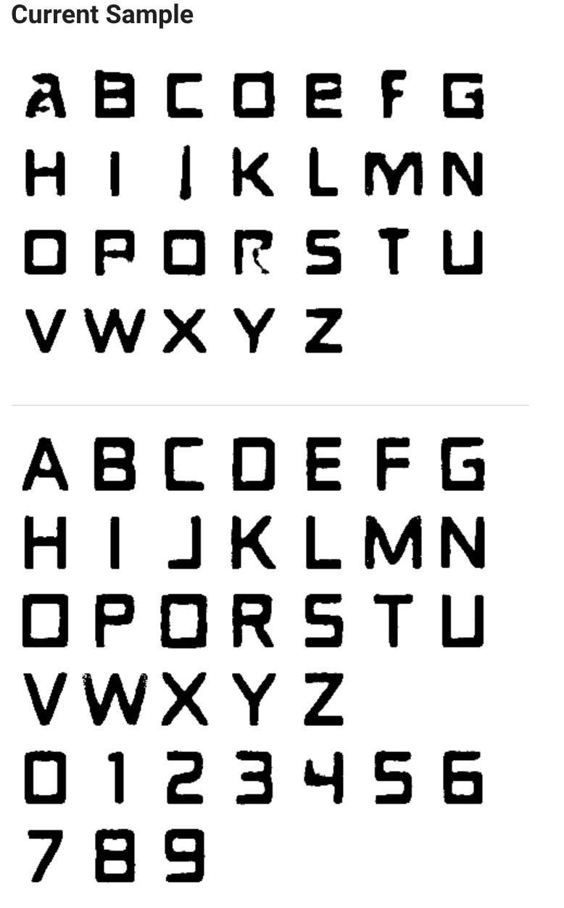
6. Link your code in a text-readable format with your submission.
FontModel.js
VectorChooser.vue
Alphabet.vue